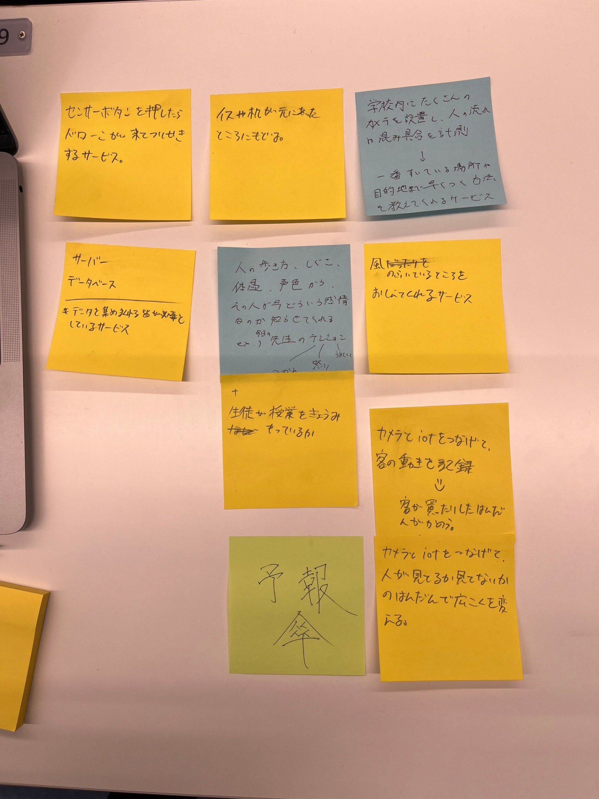
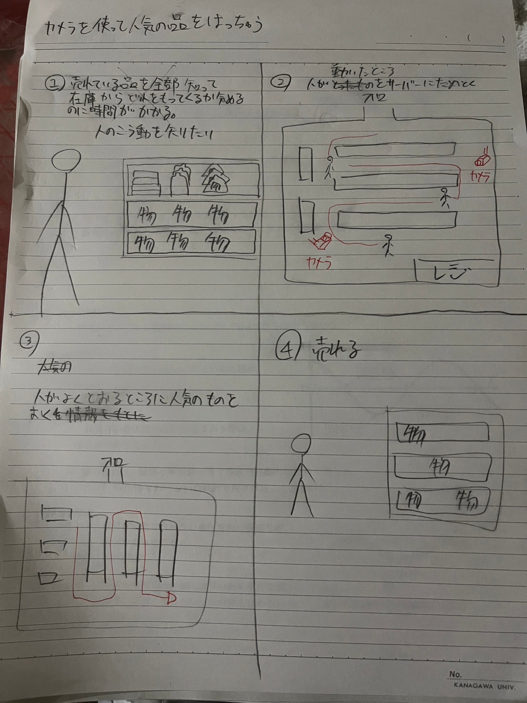

<div>
    <h1>IoTに関して IoTとは？</h1><br>
    IoTとは、様々な物品や機器にセンサーや通信機能を搭載し、それらを<br>
    インターネットに接続して情報を収集、共有、制御すること。<br><br>
    
   <h3> ex) 物品や機器+ネットワーク＝自動化や効率化を実現できる！</h3><br>


   <h1>IoTで何ができそうか？グループワークした内容</h1>
   <br><br>
  （こんな感じのが出た）<br>
   学校内にカメラを設置し、人の流れを測定→空いているエリアなどの目的地を知れる。<br>
   イスなどが元にあったところに戻る　などなど<br>


   <h1>IoTで何ができそうか？自分で考えたアイディア</h1><br>
   <br><br>


    


</div>